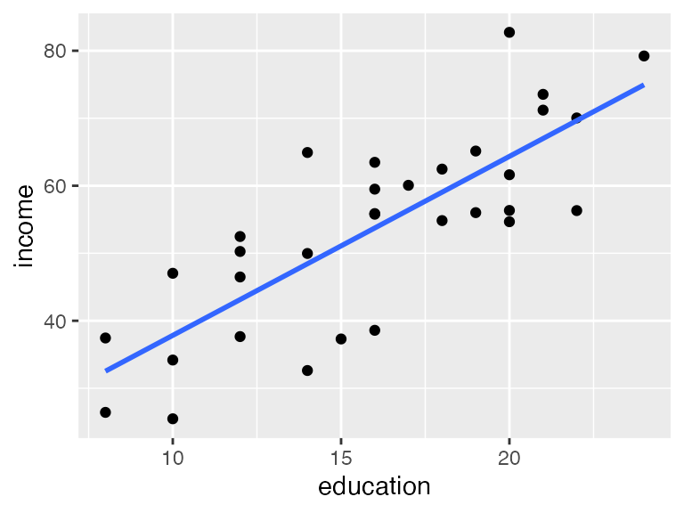
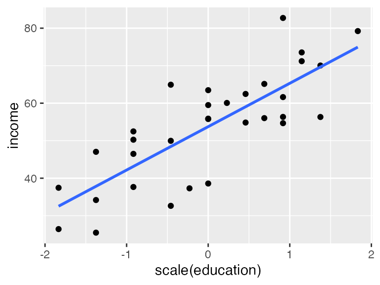

| term | estimate | std.error | statistic | p.value |
|---|---|---|---|---|
| (Intercept) | 11.321 | 6.123 | 1.849 | 0.074 |
| education | 2.651 | 0.370 | 7.173 | <0.001 |
04: Prediction for SLR
Stat 230 - Spring 2026
Warm-up questions
Is education level associated with income? Researchers collected education level (in years) and income (in thousands of dollars) for a random sample of 32 employees working for the city of Riverview.
The researchers fit a simple linear regression of income on education and obtained the following output:
Q1. Write the fitted regression equation.
TipSolution
\(\widehat{\text{income}} = 11.321 + 2.651 \times \text{education}\)
Q2. Interpret the slope coefficient in the context of the problem. (Don’t forget to specify units.)
TipSolution
For each additional year of education, the model predicts an average increase of $2,651 (2.651 thousand dollars) in income.
Q3. Interpret the intercept in the context of the problem. (Don’t forget to specify units.)
TipSolution
For an employee with 0 years of education, the model predicts an average income of $11,321 (11.321 thousand dollars). Note that this is extrapolation – education ranges from 8 to 24 years in this sample, so no one has 0 years of education, and this interpretation may not be meaningful in context.
A new researcher joined the team and decided that education should be standardized (to have mean 0 and SD 1) before fitting the regression model. The output from this regression is shown below:
| term | estimate | std.error | statistic | p.value |
|---|---|---|---|---|
| (Intercept) | 53.742 | 1.587 | 33.861 | <0.001 |
| scale(education) | 11.567 | 1.613 | 7.173 | <0.001 |
Q4. Write the fitted regression equation for this new model.
TipSolution
\(\widehat{\text{income}} = 53.742 + 11.567 \times \text{scale(education)}\)
Q5. Interpret the slope coefficient in the context of the problem. (Don’t forget to specify units.)
TipSolution
For each one standard deviation increase in education (about 4.36 years), the model predicts an average increase of $11,567 (11.567 thousand dollars) in income.
Q6. Interpret the intercept in the context of the problem. (Don’t forget to specify units.)
TipSolution
For an employee with average education (16 years, i.e. scale(education) = 0), the model predicts an average income of $53,742 (53.742 thousand dollars). Unlike the intercept in the original model, this is a meaningful value since it corresponds to an employee actually near the center of the observed data.
Q7. Compare the two models. What’s the same? What’s different?
TipSolution
The two models describe exactly the same relationship – the p-values for the slope are identical. What differs is the scale of the x-variable, which changes the numeric values of the coefficients and what they mean: the slope goes from “per 1 year of education” (2.651) to “per 1 SD of education” (11.567), and the intercept goes from “predicted income at 0 years of education” (an extrapolation) to “predicted income at average education” (a value within the data).
Prediction and confidence intervals
Tip
The R code for the following questions is found at
https://aluby.github.io/stat230/activities/04R-prediction
The URL is also posted on Moodle.
Now, we’ll explore the city data using R.
Q1. Make a plot of income against education and overlay the linear regression equation. Does it look like what you expected?
TipSolution
gf_point(income ~ education, data = city) |>
gf_lm()
Yes – the scatterplot shows a positive, linear, moderately strong relationship between education and income, consistent with the positive slope from the regression output above.
Q2. Make a plot of income against scale(education) and overlay the linear regression equation. Does it look like what you expected?
TipSolution
gf_point(income ~ scale(education), data = city) |>
gf_lm()
Yes – the plot looks identical in shape to Q1, just with the x-axis relabeled in standard deviations from the mean instead of raw years. Standardizing doesn’t change the strength or direction of the relationship, only the scale of the x-axis.
Q3. Find the linear regression equation from Q1. Confirm that it matches the table at the beginning of this worksheet.
TipSolution
library(broom)
lm.a = lm(income ~ 1 + education, data = city)
tidy(lm.a)# A tibble: 2 × 5
term estimate std.error statistic p.value
<chr> <dbl> <dbl> <dbl> <dbl>
1 (Intercept) 11.3 6.12 1.85 0.0743
2 education 2.65 0.370 7.17 0.0000000556Q4. The first person in this dataset has education = 8. Calculate the expected income of this person using the first regression equation.
TipSolution
\(\widehat{\text{income}} = 11.321 + 2.651(8) = 32.531\), i.e. $32,531.
predict(lm.a, newdata = data.frame(education = 8)) 1
32.53175 Q5. If we want to predict the income of this person, should we use a confidence interval or a prediction interval?
TipSolution
A prediction interva. We’re predicting an individual outcome (this specific person’s income), not the average income of all employees with 8 years of education.
Q6. Use R to construct the appropriate 89% interval for this person’s income. Record this interval below.
TipSolution
predict(lm.a, newdata = data.frame(education = 8),
interval = "prediction", level = .89) fit lwr upr
1 32.53175 16.74574 48.3177689% prediction interval: (16.746, 48.318), i.e. ($16,746, $48,318).
Q7. Interpret the interval in context.
TipSolution
We are 89% confident that a randomly selected City of Riverview employee with 8 years of education will have an income between $16,746 and $48,318.
Q8. Run the code to produce a scatterplot, regression line, and both types of intervals. Which is the prediction interval and which is the confidence interval? How can you tell?
TipSolution
The prediction interval is the wider band; the confidence interval is the narrower band hugging the regression line. The confidence interval only captures uncertainty in the average income at a given education level, while the prediction interval also accounts for individual-level variability around that average, which makes it wider.